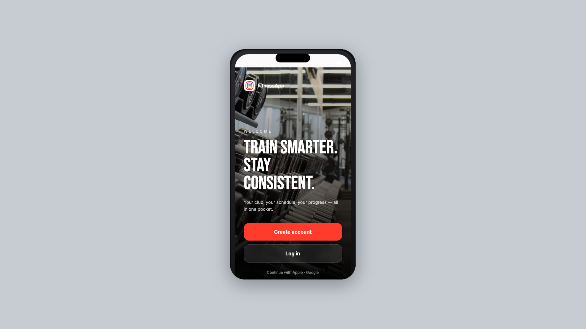

Deeply specialised Ukrainian teams, assembled around real problems. Filter by industry to see how niche companies combine to deliver.

An AI fitness companion that analyses nine health metrics at once and rewrites each user’s plan in real time. 45% faster time-to-market, 30% lower infrastructure cost, 4.8/5 app rating.
Health & Wellness · AI/MLA generative system that drafts social posts, decodes internal acronyms from a company glossary and translates documents across formats while keeping their layout — fine-tuned on the client’s own writing so the output sounds like them.
GenAI / LLM · MarketingA platform that tracks competitor and retailer price dynamics, flags out-of-stock risk and forecasts demand — turning marketplace noise into supply-chain and advertising decisions.
E-commerce · Data & MLWrapmate solved printing and installation across 2,000+ certified installers — design is still manual. A generative tool that turns a business's brand into wrap concepts laid on the real template for its vehicle, previewed in 3D and exported as print-ready panels.
Generative Design · CommerceFor finance, pharma and legal teams who can’t put sensitive files into public AI tools: a self-hosted retrieval-augmented assistant that answers strictly from uploaded documents, with a citation behind every sentence and full compliance logging.
Enterprise AI · RAG & ComplianceA fine-tuned GPT-4o-mini system that reads spoken restaurant orders — items, modifiers, quantities — across brands and menus, scoring its own confidence and handing low-certainty orders to staff instead of guessing.
Voice AI / LLM · Retail OpsA multi-tenant SaaS platform shipped an AI assistant that writes and runs SQL against customers’ production databases. One engagement proved it correct, safe and auditable: 93% verified NL-to-SQL accuracy, zero hallucinated schema objects, zero cross-tenant leakage, 80% fewer critical issues.
AI Validation · Security & ComplianceTranslated dialogue often will not fit the original timing. A phoneme-based service predicts spoken duration, corrects tempo against the source recording, and returns an automated verdict on whether a line can be dubbed as written or needs rephrasing.
Speech AI · Media LocalisationClaude as the AI foundation for enterprise delivery, with patterns from 100+ implementations across Salesforce, SAP, Microsoft and Databricks. 40–50% less implementation time, 30% lower cost, 90%+ test coverage.
AI Implementation · EnterpriseEdge vision inspects every unit as it moves, replacing sampling-based manual QA with continuous inspection. 99.2% accuracy, under 40ms per unit, 31% less scrap and rework.
Computer Vision · ManufacturingA real-time scoring engine evaluates every transaction inline, cutting losses without adding steps for legitimate customers. Sub-100ms decisions, 38% lower fraud loss.
Fintech AI · PaymentsA tool-using agent wired into the helpdesk and product APIs, resolving common requests end-to-end and escalating the rest. 55% of tickets auto-resolved.
GenAI / LLM · Customer SupportFlight autonomy plus a photogrammetry pipeline turns a single flight into a measurable 3D model, cutting repeat site visits. 70% less field time.
Geospatial · Robotics